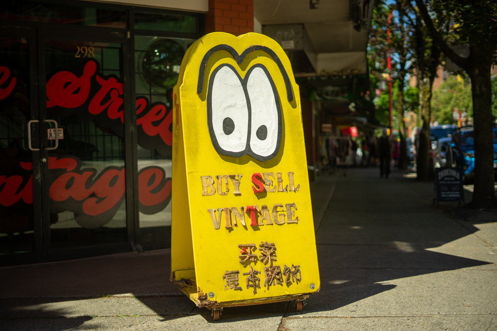
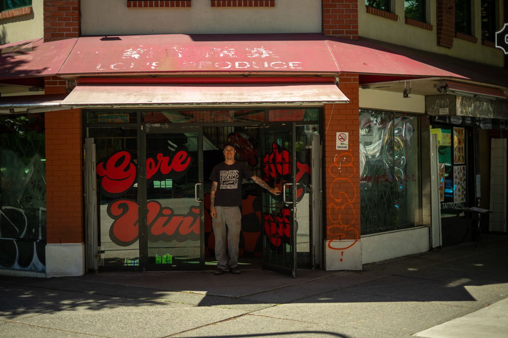

Gore Street Vintage
Gore & Keefer


vintage$$shopping8 min from Main Street–Science World
GSV is one of the OG vintage shops in Chinatown, with a crazy selection of graphic tee's, work wear, and vintage designer, there is something for everyone.
Gore & Keefer · Chinatown, Vancouver
$$ · ~8 min walk from Main Street–Science World SkyTrain